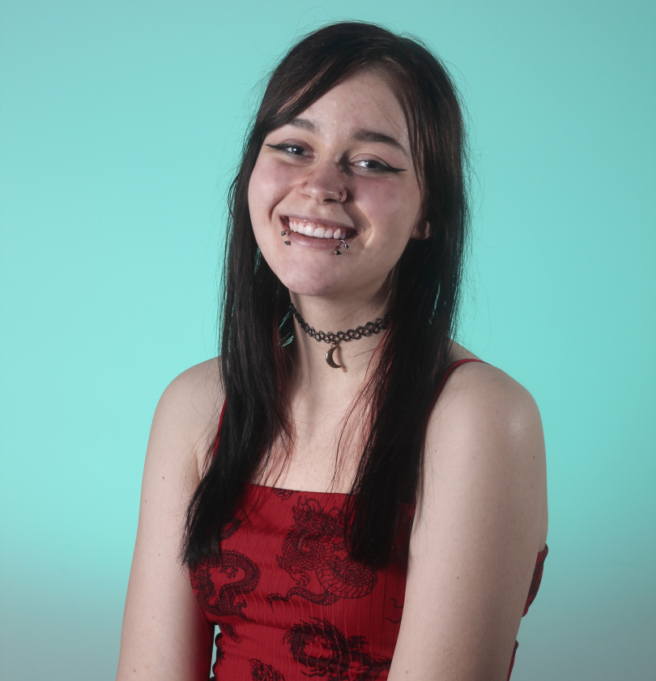

Hello! I am a graphic designer that has always had a passion for art. Since I was a child I have worked on many art mediums, photography, and graphic design. I finally decided to make this my career when I attended Saskatchewan Polytechnic from 2020-2022. My skills as an artist have been sharpened, however I am always keen to learn new things at any opportunity I get. I also enjoy video games/tech and meeting new people!
